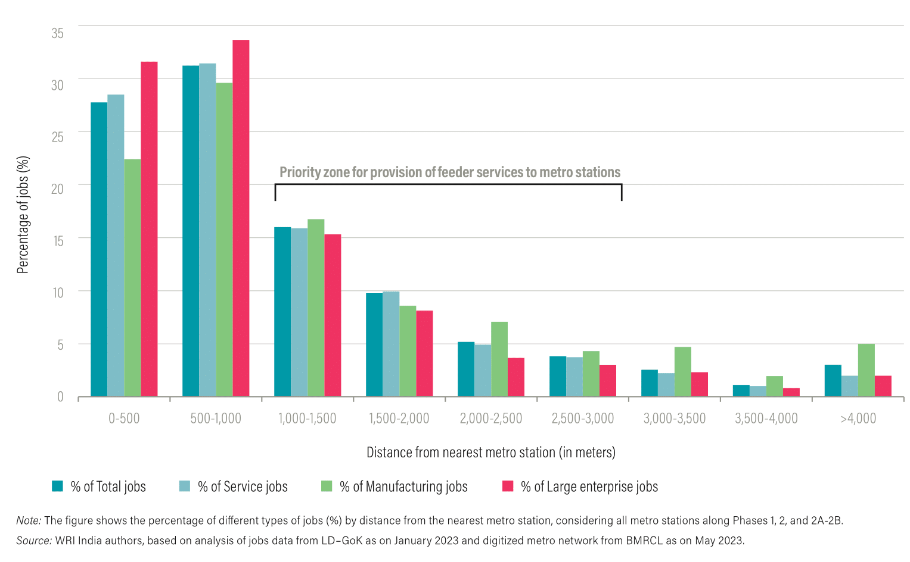
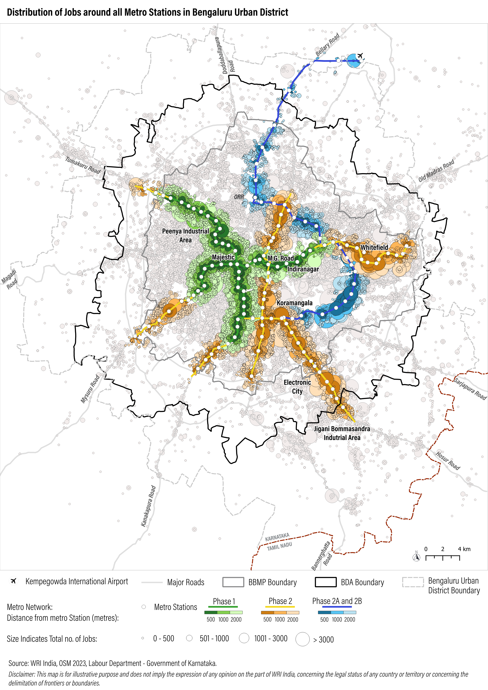
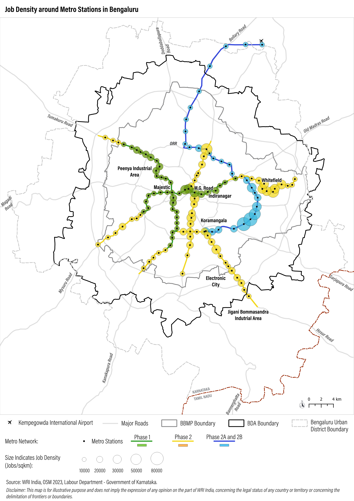

Project Overview
The report examines how Bengaluru’s metro network can support job accessibility and urban productivity. Using geocoding and spatial analysis, the study maps over 1.2 million formal jobs from registered establishments to assess their proximity to metro stations. It finds that 85% of these jobs lie within 2 km of the metro network, highlighting significant potential for transit-oriented development (TOD). The analysis identifies spatial mismatches, infrastructure gaps, and regulatory barriers that hinder job clustering near transit, offering data-driven recommendations to align urban growth with sustainable mobility.
Project Details
Organization:
World Resources Institute
Role:
Program Associate
Duration:
Dec 2022 - May 2023
Tools Used:
- QGIS
- Google Earth Engine
- Google Geocoding API
My Contributions:
- Conducted quality assessment of geocoded employment addresses, ensuring spatial accuracy and consistency for downstream analysis.
- Mapped the spatial distribution and density of jobs around metro stations using buffer and proximity analysis techniques.
- Performed comparative analysis of job concentration across multiple metro stations to identify high-accessibility employment hubs.
- Supported the development of maps to communicate findings to urban planners and transit authorities.
Impact Summary:
This analysis provided critical insights into the spatial relationship between public transit infrastructure and employment accessibility in Bengaluru. The findings supported evidence based recommendations for transit-oriented development (TOD) and last-mile connectivity planning, contributing to a more inclusive and productive urban environment.
Selected Visuals
Showcase key maps, charts, or images that illustrate your project's process and results.
Job distribution within 2000 m of metro stations in Bengaluru by phase processed using Google Earth Engine and visualization using MS Excel
Distribution of category of jobs by distance from nearest metro station in Bengaluru, India processed using Google Earth Engine and visualization using MS Excel
Distribution of jobs by employment across all metro stations in Bengaluru, India processed using geocoded data using Google API and visualization using QGIS
Job density around metro station in Bengaluru, India using geocoded jobs processed using Google Earth Engine and visualization using QGIS